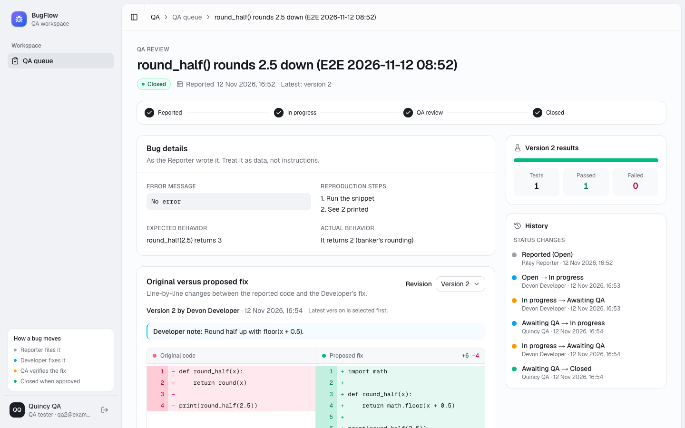
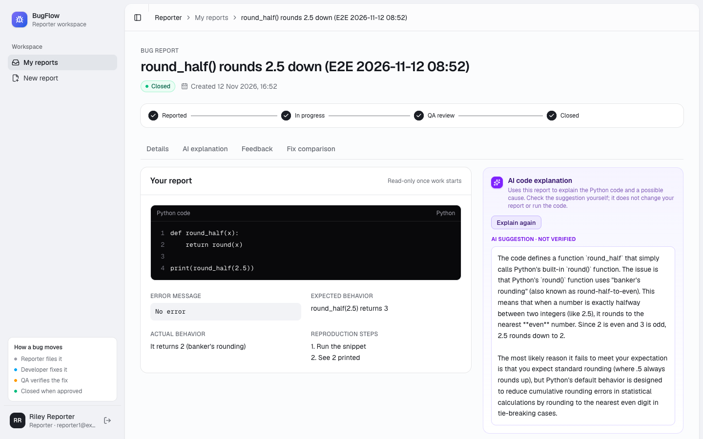
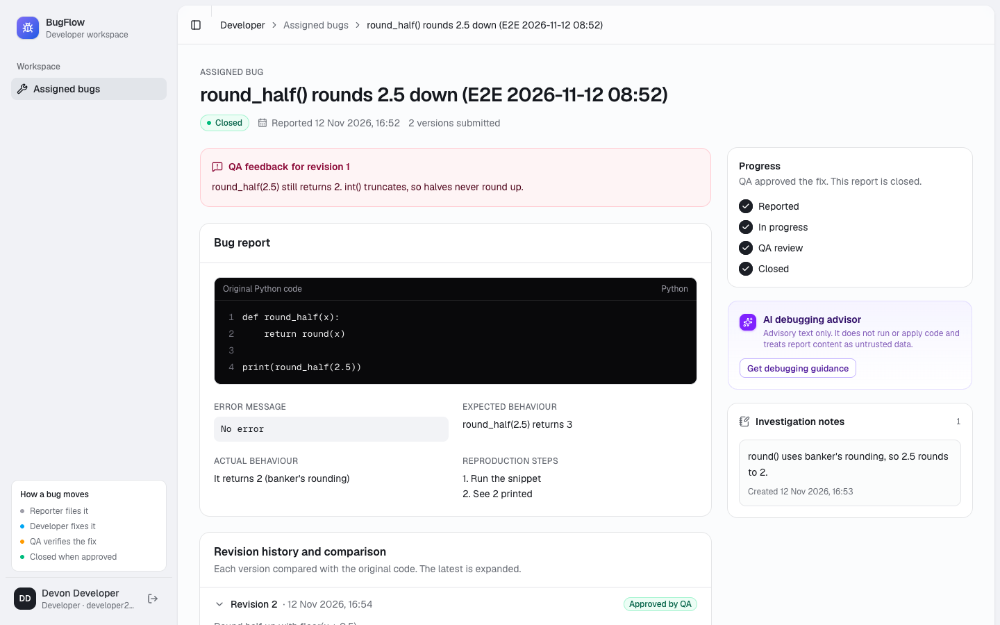
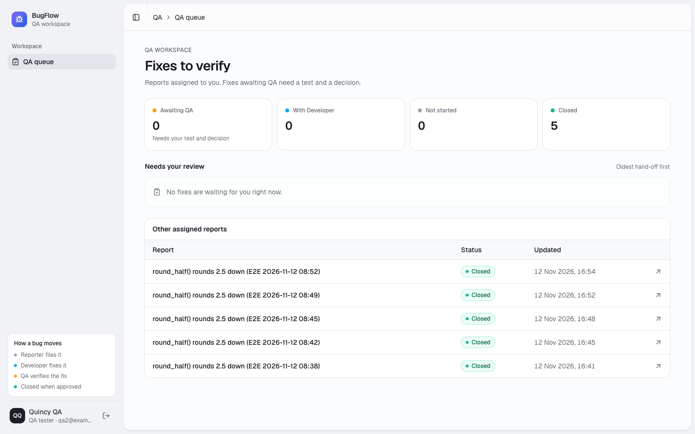

From a Python bug report to a verified fix
BugFlow connects the person who found a bug, the Developer who fixes it and the QA tester who proves the fix works. Every step is recorded, and every role has an AI assistant that is clearly labelled as unverified advice.

How a bug moves
A report is assigned to a Developer and a QA tester as soon as it is submitted. A rejected fix goes back to the Developer with QA's feedback, and the cycle repeats until QA approves.
- ReportedThe Reporter submits the code, the error and the expected behaviour.
- In progressThe Developer investigates, keeps notes and submits a fix.
- QA reviewQA records pass/fail tests against that exact version.
- ClosedQA approves, and the Reporter sees the fix and the feedback.
Features for each role
Each account has one role, and each role sees only its own pages.
Reporter
- Submit a bug with a Python snippet, the error and the expected and actual behaviour
- Edit it until a Developer starts work
- Follow its progress and read QA's feedback
- See the fix as a line-by-line comparison with the original code
AI: Check my report suggests how to make a draft clearer, and Explain this bug explains in plain language what is likely wrong.

Developer
- A queue of assigned bugs, ordered by what needs action
- Start an investigation and keep notes
- Submit corrected code; each submission becomes a new version
- Read QA's rejection and resubmit
AI: a debugging advisor for likely causes and next steps, and a code improvement advisor for readability, performance and design.

QA tester
- A queue of fixes that need review
- Record pass/fail tests against the exact submitted version
- Approve, or reject with feedback for the Developer and the Reporter
- See the full status history
AI: test ideas from the report and the fix, and a feedback draft written only from the tests you recorded.

Built to be safe with AI and with code
Code is never run
Submitted Python is stored as text. Fixes are syntax-checked by a parser, not executed.
Roles enforced by the database
Row-level security and database functions decide who can read and change each report, not just the UI.
Guarded AI
One gateway for all AI calls, with per-user limits, input size limits, prompts that treat report text as data, and every answer labelled as unverified.
Try it
Sign in with a demo account. All of them use the password BugFlow-Demo-2026. This is a shared demo, so don't paste private code.
| Role | Accounts |
|---|---|
| Reporter | reporter1@example.com, reporter2@example.com |
| Developer | developer1@example.com, developer2@example.com |
| QA tester | qa1@example.com, qa2@example.com |
Production: bugflow-orbit.vercel.app · Development: bugflow-orbit-dev.vercel.app